Traé lo tuyo
Podés ingresar comida, bebidas (con o sin alcohol) y tu heladerita. No cobramos recargo.
Desde 1938 · KM 421,5 del Paraná
Club social, deportivo y cultural a orillas del río, en la barranca de Rosario.
España y el Río · Rosario
El club
El Club Peña Náutica Bajada España fue fundado el 31 de mayo de 1938 a orillas del Río Paraná, en la barranca de la ciudad de Rosario, Santa Fe.
Desde entonces es punto de encuentro de familias, deportistas y vecinos que comparten el amor por el río. Para muchas personas socias, la Peña es su segundo hogar.
Hoy reúne actividades náuticas, deportivas, culturales y sociales, con espacios abiertos a socios y visitantes durante todo el año.
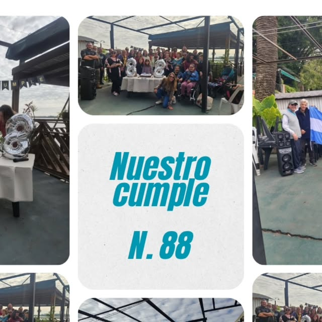
Visitá la Peña
Con tu entrada tenés acceso libre a los parrilleros y a todas las instalaciones de uso común. Ideal para armar un asado frente al río.
Podés ingresar comida, bebidas (con o sin alcohol) y tu heladerita. No cobramos recargo.
¿Preferís venir liviano? El buffet vende comidas, bebidas, carbón y hielo.
Por orden de llegada. El fuego se hace únicamente en los esquineros, para cuidar las instalaciones.
Contamos con tres anafes, también por orden de llegada.
¿Ganas de cocinar al disco? Los alquilamos en recepción. Solo te pedimos que los devuelvas en buenas condiciones.
Escribinos por WhatsApp y asegurá tu lugar.
341 229 8948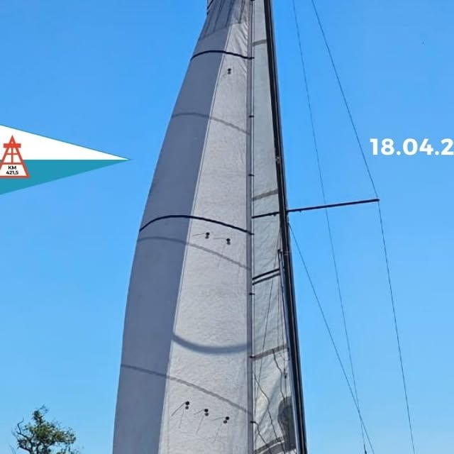
Náutica
El club organiza Regatas de Vela Internas que reúnen a la flota de la Peña. En la cuarta edición, el sábado 18 de abril de 2026, participaron siete veleros: Strega, Compinche, Matungo, Vos me Entendés, Quimera, Manía y Boogalo.
Una regata picante, con trofeos hechos a mano por Luis Álvarez y tercer tiempo para todos. ¡La Peña crece, navega y celebra!
Aprendé a navegar en el río. Consultá días y horarios por WhatsApp.
Guardería de embarcaciones y kayaks, casilleros náuticos y amarras. Mirá los valores en cuotas y servicios.
Remo · @remo_pnbe
Remo juvenil, remo adultos y travesía. El equipo de la Peña compite en regatas y travesías de Santa Fe y Entre Ríos.
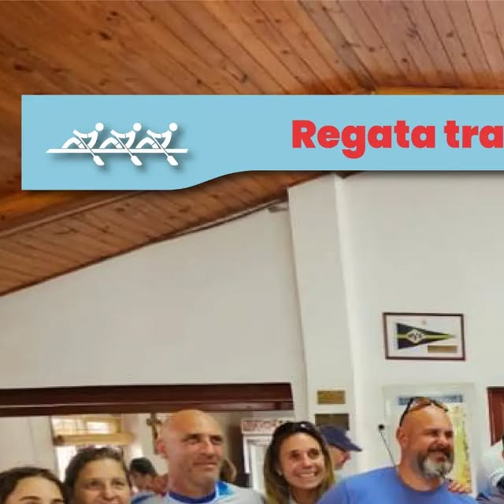
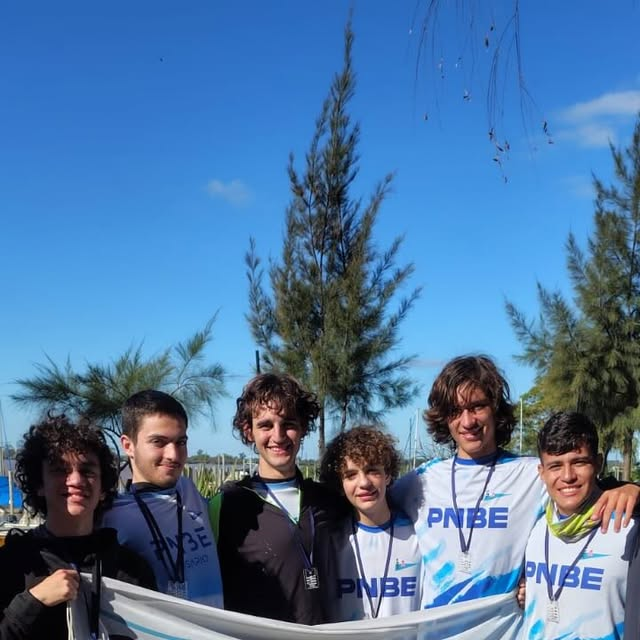
Clases de remo: $22.000 · cadetes $9.000. Entrenadores: Juan Ignacio Coronel y Joan Pastorino. Consultá por WhatsApp.
La Senda · @ecologialasenda
Sábados de 10 a 13 h · de 6 a 13 años
Todos los sábados chicos y chicas aprenden sobre:
En la Bajada España creemos que conocer nuestro entorno es el primer paso para cuidarlo. ¡El río nos une!
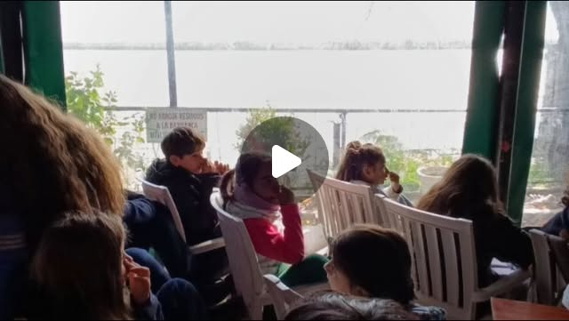
Cultura
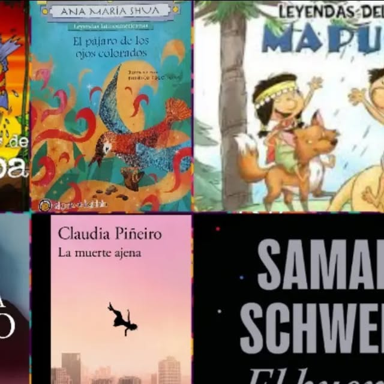
Lectura en sala, préstamo a domicilio y colección digital. Presentaciones de libros, talleres y actividades para todas las edades.
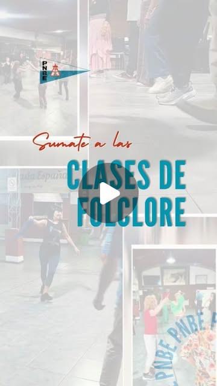
Vení a aprender folclore al lado del río y empezá la semana con la mejor energía.
Novedades
Construcciones de una posible Músico-Terapia-Ocupacional. 19:30 h en la Biblioteca del Paraná.
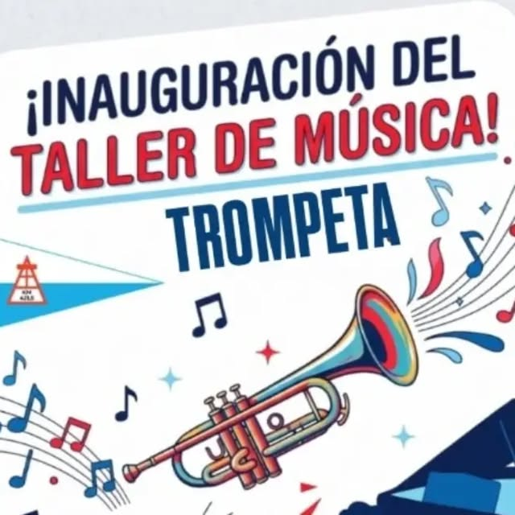
El equipo de remo salió campeón de la travesía Vuelta del Paraguayo 2026 en Santa Fe.
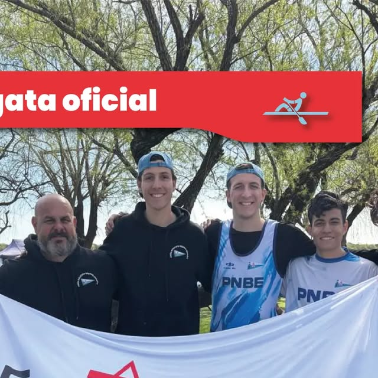
Socios y amigos celebramos el aniversario del club en el patio, soplando las velitas.
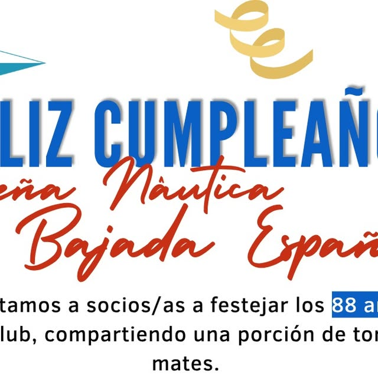
Siete veleros, mucha emoción y tercer tiempo a la orilla del río.
Galería
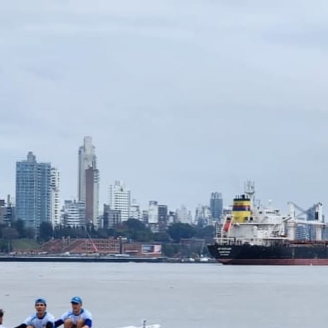
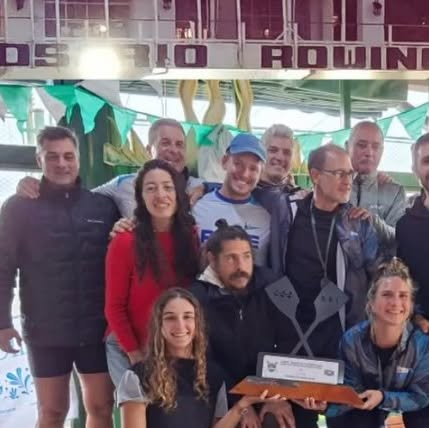
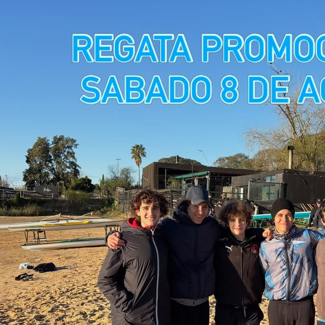
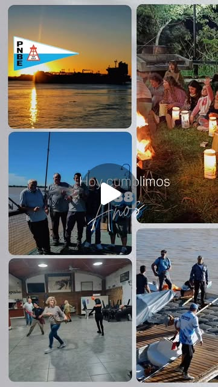
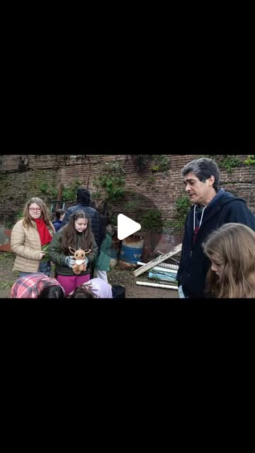
Hacete socio
Ser socio es tener el río a mano todo el año, con beneficios en talleres y actividades, y una comunidad que hace 88 años late junto al Paraná.
Valores vigentes desde el 01/09/2025. Toda deuda anterior se actualiza automáticamente. Consultá por WhatsApp para confirmar valores actuales.
Contacto